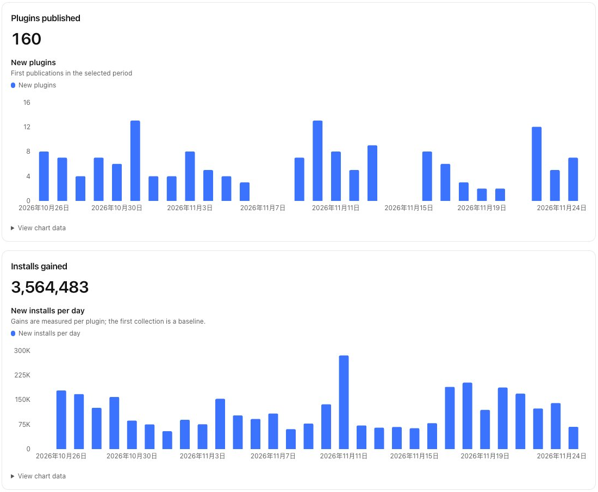

May to November 2026. From basic package checks to marketplace rules that catch real problems, and what that means for trust, partners and cost.
Community Operations · Dify Marketplace15 slides
The short version
In six months we went from basic package checks to marketplace rules that are live and catching real problems
May – Sep · Phase 1Safety checks at every step
Every plugin is checked when it is submitted, when it is merged and when it is published. Phase 1 closed on 20 September.
NovemberRules for a cleaner catalog
We audited the whole catalog, then put rules live for categories, duplicates and packaging. They now check every submission.
NowFixing existing listings
Authors of look-alike and overlapping plugins were asked to consolidate or differentiate. The first deadline is today, 24 November.
1,270plugin packages opened and audited
188submissions checked by the new rules since 11 Nov
66stopped at least once; 31 already fixed and passing
36clean-up requests sent to plugin authors
Sources: Plugin governance review (Feishu, 23 Nov 2026); GitHub check results on langgenius/dify-plugins, 11–24 Nov02 / 15
What leadership is asking · CMO Office group, 21–24 Nov
Leadership wants every activity judged by what it costs and what it brings in
CEOGoal
Know what each acquisition channel costs before discussing anything else. Re-rank channels every three to six months, the way a trading desk re-ranks its strategies.
CMO OfficeDirection
Move marketing from broadcast to ecosystem and trust. Open source becomes a source of trust and buying signals, not just traffic.
Japan teamFinding
Social and user-generated content volume shows no link to revenue. Effort should go to selling with partners and direct business development.
Shared playbookAI search
AI assistants recommend what trusted third parties say. Fix the pages buyers already reach, then measure and repeat.
Pain points we heard
There is no shared baseline of cost per channel, so priorities cannot be set.
Activity cannot be tied to deals, because the attribution data is missing.
Low-quality, AI-generated contributions are turning community upkeep into a hidden cost.
Source: CMO Office Bi-Weekly group chat and the research shared there, 21–24 Nov 2026. Paraphrased by Community Ops.03 / 15
Where the marketplace fits
The plugin marketplace serves that agenda in four ways, and governance is what makes each one hold
01Trust
Enterprises choose open source to avoid lock-in and to pass security review.
What governance adds
Every plugin is checked before it reaches users, and the check is on record.
Checked at submit, merge, publish
02Partners
Partner-built plugins are how partners connect their products to Dify.
What governance adds
Clear rules and a quick, predictable review for what partners submit.
642 community-built plugins in use
03Signals
Installs and calls show which integrations companies really use.
What governance adds
Clean categories and fewer duplicates make that data readable.
30.3M installs · 12.8M calls
04Cost
Community upkeep is part of what it costs to win users.
What governance adds
Automatic checks absorb the growth in submissions.
331 submissions in November so far
How to read this This is Community Ops’ reading of the discussion and a proposal for the meeting. It is not yet an agreed position.
Sources: CMO Office group discussion (21–24 Nov); Marketplace ops dashboard (24 Nov); Community Ops data (21 Oct – 19 Nov); GitHub04 / 15
Why it matters · Scale
The marketplace keeps growing: about 1 in 8 listed plugins was first published in the last 30 days
All time
1,278plugins
388templates
30.3Mplugin installs
334Ktemplate uses
Last 30 days
+160new plugins
+39new templates
+3.56Mplugin installs
+88.5Ktemplate uses
From the dashboard · daily, last 30 days

Source: Marketplace ops dashboard, snapshot 24 Nov 2026, 30-day view. “1 in 8” = 160 new plugins ÷ 1,278 total.05 / 15
Why it matters · The cost side
Submissions have more than tripled since May, so review cannot stay manual
Plugin submissions opened per month, 2026
98
138
168
186
183
347
331
MayJunJulAugSepOctNov*
3.5×
more submissions in October than in May
264
submissions merged in November so far
16–18 h
typical time from submission to merge in October and November
Why this matters The research shared in the group warns that, without automated governance, community upkeep becomes a hidden acquisition cost. This is that cost, growing.
Source: GitHub, langgenius/dify-plugins pull requests, counted 24 Nov 2026. *November covers 1–24 Nov. Time to merge is the median.06 / 15
Why it matters · Trust
Plugins run inside our users’ environments, so trust has to be built into the marketplace
30Kself-hosted Dify instances active per day
66Kself-hosted instances active per month
12.8Mplugin calls in production in 30 days
Where we started in May
Reviews mostly confirmed that a package could be opened and was described correctly. Spot checks found packages carrying files that should never be published, traces of credentials and bundled binaries.
What enterprises asked for · Japan survey, 38 responses
Search and plugin types that work in Japanese, clear safety signals, workspace-level install approval with separated credentials, and notes on version compatibility.
Our approach Let automation handle every check that can be repeated; keep reviewers for judgement calls and exceptions.
Sources: Plugin governance review (23 Nov); Japan enterprise survey (Sep 2026); Community Ops data: self-hosted telemetry as of 17 Nov, plugin calls 21 Oct – 19 Nov07 / 15
What we did · The journey
Six months, two stages: safety first, then catalog quality
Phase 1 · Safety checksNovember · Catalog quality
27 May
Governance proposal: how plugins are submitted, listed and maintained
June
Review rules agreed: what gets blocked, what needs a person
7 Jul
Authors rate their plugin’s risk; a bot flags what is missing
10 Aug
Automatic safety checks before and after merge
20 Sep
Phase 1 closed
Early Nov
Full audit of all 1,270 plugin packages
10–11 Nov
New catalog rules live; first real submissions blocked
24 Nov
Deadline for authors to fix existing listings
TODAY
Source: Plugin governance review, 23 Nov 2026 (Feishu)08 / 15
What we did · Phase 1, May – September
Every submission now passes safety checks before it reaches users
1Submit
Authors declare the risk
Each submission states how sensitive the plugin is. A bot replies straight away when that information is missing or unclear.
Since 7 July
›
2Review and merge
Automatic package scans
Checks look for leaked secrets, files that should not ship, bundled binaries and risky dependencies. It is clear what blocks a plugin and what a reviewer decides.
Since 10 August
›
3Publish
Re-checked and recorded
Each package is checked once more after merge, and its scan report is kept with the release.
Re-check since 10 August
Also delivered Authors can run the same checks on their own machine before submitting. The official plugin repository has basic quality checks.
Still to be measured Our targets (95% check completeness, almost no new high-risk plugins, review time down 30%) have no baseline yet.
Sources: Plugin governance review (23 Nov); Community Ops plugin governance page (status check of 20 Sep)09 / 15
What we did · November audit
We opened every package and found a catalog that is hard to browse and crowded with look-alikes
63%no category tag
803 of 1,270 packages carried no category tag
1,270packages
950unique plugins
659authors
17
Too few categories. The tag list had only 17 options, with no clear home for model access, audio, documents or databases.
16 + 107
Look-alike plugins. 16 families built from the same template, plus 107 near-identical gateway plugins for OpenAI-compatible models.
305
Outdated versions left behind. About a quarter of all packages were old versions that only add maintenance work.
Source: Dify plugin market audit, November 2026 (1,270 packages), as summarised in the governance review10 / 15
What we did · What usage tells us
Real usage is concentrated: 50 plugins carry almost 99% of all calls
Share of all plugin calls in 30 days
82.2%
16.5%
1.3%
Top 10 pluginsNext 40 pluginsOther 818 plugins
12.8M
plugin calls in production over 30 days
97%
of calls go to official plugins (226 of the 868 plugins seen)
71%
of plugins seen had fewer than 100 calls in 30 days
What this means Usage tells us where to review first. Before any plugin is merged into another or removed, we still check user impact case by case.
Source: Community Ops data, production plugin calls, rolling 30 days (21 Oct – 19 Nov 2026); 868 plugins seen. Shares, not daily peaks.11 / 15
What we did · November rules
New rules went live on 10 November and caught real issues the next day
Four changes, in plain terms
Categories
The tag list grew from 17 to 25, and every new or updated plugin must pick one.
Packaging
One plugin per folder, the same tags across versions, and a prompt to archive old versions.
Duplicates
Reviewers are alerted to look-alike names, descriptions and code. Same-author name clashes are blocked.
Policy
A published policy tells authors what to fix, how gateway plugins must differ and how old versions retire.
Proof in the first 24 hours
11 Nov · Case 1
An update was blocked because its versions carried conflicting tags. The author fixed it and it was merged the same day.
11 Nov · Case 2
Another submission was blocked for having no category. The author added one and it was merged on 12 November.
Two weeks in, the new rules check every submission and stop about one in three
122passed first time
31stopped, then fixed
35stopped, not yet passing
188submissions checked, 11–24 Nov
35%stopped at least once before a reviewer had to look
31fixed by the author and now passing
7 / 36authors have replied to the clean-up requests so far
Existing listings The first deadline is today. Most authors have not answered yet, so the next step is a case-by-case review: merge, exception, migration or delisting.
Source: GitHub, langgenius/dify-plugins. Governance check results grouped by submission, and replies on the 36 request threads, counted 24 Nov 2026 14:30 CST.13 / 15
What we know · Measurement
What we can already measure, and what we still cannot
QuestionWhat we have todayStatus
SupplyHow many plugins arrive?
160 new plugins in 30 days
Measured
UseWhich plugins matter?
12.8M calls in 30 days; 50 plugins carry 99%
Measured
LoadHow much review work is there?
331 submissions in November; 16–18 hours to merge
Measured
AutomationHow much do the checks absorb?
About 1 in 3 submissions stopped automatically
Measured
CostWhat does one reviewed plugin cost?
Reviewer time per submission is not recorded
Not yet
ValueWhich plugins come from partners, and who installs them?
No link yet between plugins, partners and customer accounts
Not yet
TargetsDid Phase 1 hit its targets?
No baseline or measurement window yet
Not yet
Proposal Report these seven lines every quarter, on the same cycle as the channel review, and close the three gaps first.
Sources: Marketplace ops dashboard (24 Nov); Community Ops data (21 Oct – 19 Nov); GitHub (24 Nov); Plugin governance review (23 Nov)14 / 15
What is next
Next: finish the clean-up, then make the marketplace work for partners and enterprise buyers
In progressKeep governance running
Review the 24 November deadline case by case: merge, exception, migration or delisting
Add categories to plugins that still have none
Archive old versions; sort out same-name plugins and author identity, in batches
With productEasier to find and to trust
Categories and search first, so users can find a plugin and tell similar ones apart
Keep validating what enterprises need: permissions, data flow, maintenance status, compatibility, install approval
Keep the catalog readable for AI assistants and coding agents (proposal)
New · To be scopedClose the data gaps
Record reviewer time per submission
Mark which plugins are built by partners
Pass company-level install and usage signals to the sales and partner teams
Still open Bot pre-check, a cool-down for repeat offenders and trusted ranking stay in requirements review. Launch depends on engineering staffing.